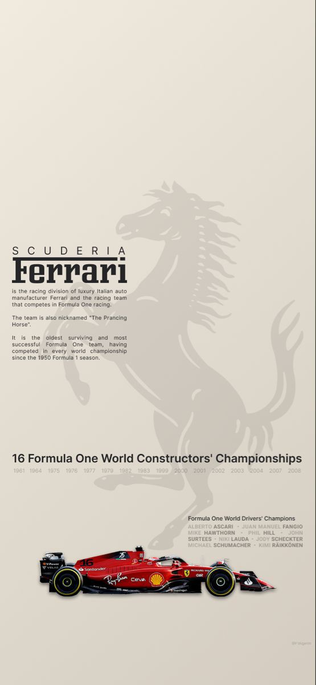
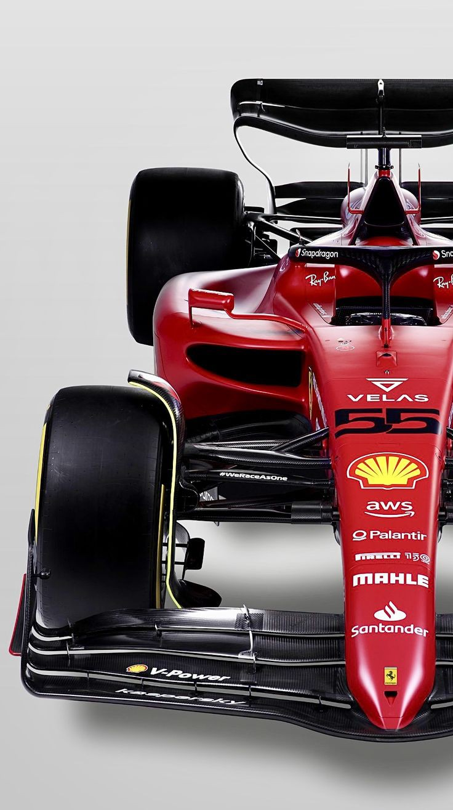
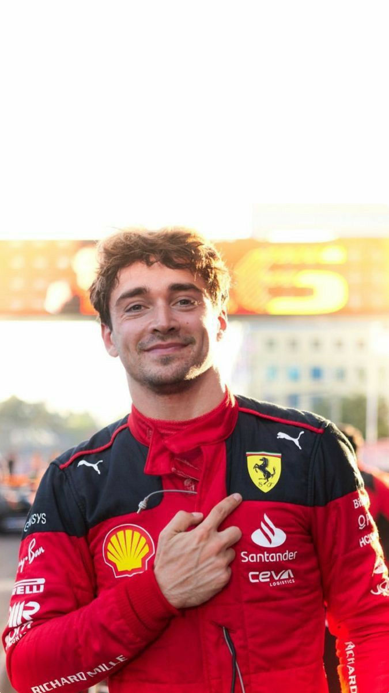
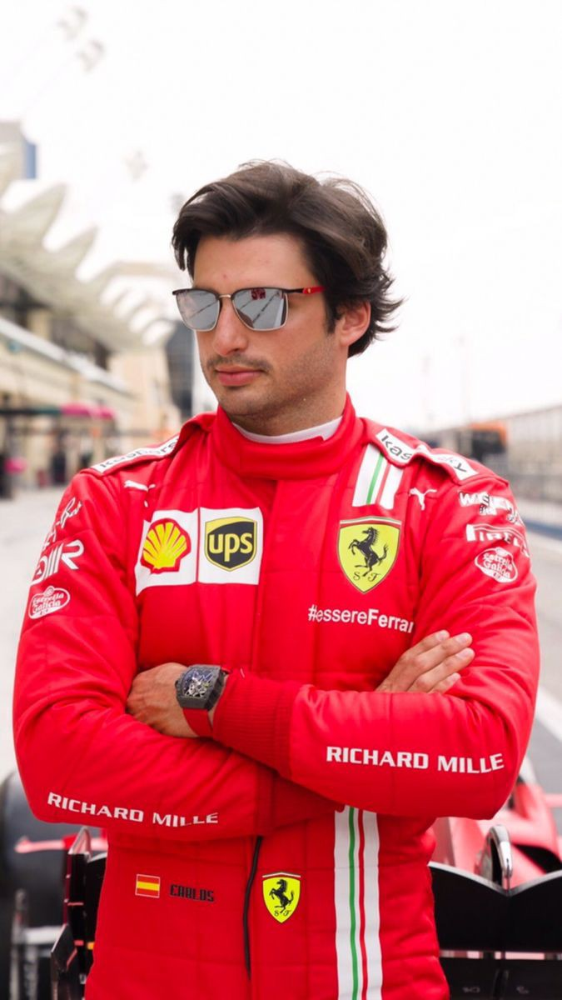

Scuderia Ferrari is the oldest surviving and most successful Formula One team, having competed in
every
world championship since the 1950 Formula One season.
The team was founded by Enzo Ferrari, initially to race cars produced by Alfa Romeo. Ferrari has won
16
Constructors Championships and 15 Drivers Championships.
The team has won 242 races, 249 pole positions, 258 fastest laps, and 802 podiums.
Ferrari first entry in Formula One was at the 1950 Monaco Grand Prix. The team has entered 1076
races,
with 1073 starts . Ferrari has also been a Formula One engine
manufacturer, with 244 race victories and 251 pole positions

The SF-23 is a Formula One racing car designed and constructed by Scuderia Ferrari that competed in
the
2023 Formula One World Championship.
The car was driven by Carlos Sainz Jr. and Charles Leclerc during Grand Prix races .
The car features a carbon-fiber composite honeycomb structure for the chassis, 18-inch wheels, a
hydraulically controlled rear differential,
and a combination of push-rod (front) and pull-rod (rear) suspension. The weight, including coolant,
oil, and the driver, is approximately 1,760 pounds
The Ferrari SF-23 was powered by a Ferrari 066/10 1.6 L (98 cu in) direct injection V6 turbocharged
engine that was limited to 15,000 RPM in a mid-mounted,
rear-wheel drive layout. The cars engine was a hybrid setup combining a turbocharged 1.6-liter V-6
and two motor-generators, one on the driveline and another integrated with the turbo.
The cubic capacity of the engine was 1600 cc, and the maximum rpm was 15,000. The engine had a
single turbocharger, and the maximum fuel flow rate was 100 kg/hr. The configuration of the engine
was 90° V6, and the bore and stroke were 80 mm and 53 mm, respectively

Charles Leclerc is a Monégasque racing driver, currently racing in Formula One for Scuderia Ferrari.
He was born on October 16, 1997, in Monte Carlo, Monaco. He won the GP3 Series championship in 2016
and the FIA Formula 2 Championship in 2017. Leclerc made his Formula One debut in 2018 for Sauber,
a team affiliated with Ferrari, for which he was part of the Ferrari Driver Academy. With Sauber having
finished last the year before, Leclerc led the charge to improve its finishing position in the Constructors
Championship to eighth, and was the higher ranked of the two Sauber drivers. He joined Ferrari the next
season and became the second-youngest driver to qualify on pole position in Formula One at the 2019 Bahrain Grand Prix.
The 2019 season also saw Leclerc take his first career win in Belgium. He won the FIA Pole Trophy for most pole
positions in the 2019 season, becoming the youngest driver to win it, before winning it again in 2022.
Leclerc finished runner-up to Max Verstappen in the 2022 World Drivers Championship. Leclerc has won 5 races
and attained 23 pole positions in Formula One. He scored the first grand slam of his career at the 2022 Australian
Grand Prix. Leclerc is set to remain at Ferrari until at least the end of the 2025 season

Carlos Sainz is a Spanish Formula One driver who was born on April 12, 1962 in Madrid, Spain. He is the son of Carlos Sainz Sr.,
a two-time World Rally Champion. Sainz Jr. began his racing career in karting at the age of 8 and won several regional karting
championships before moving up to single-seater racing. Sainz Jr. made his Formula One debut with Toro Rosso in 2015 and has since
raced for Renault, McLaren, and Ferrari. He has achieved two podium finishes and one pole position in his Formula One career. Sainz Jr.
finished sixth in the 2023 Formula One World Championship with 200 points.